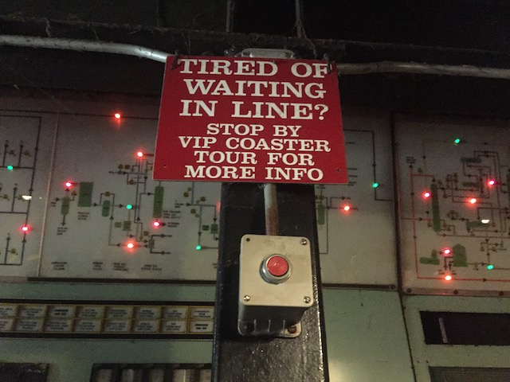
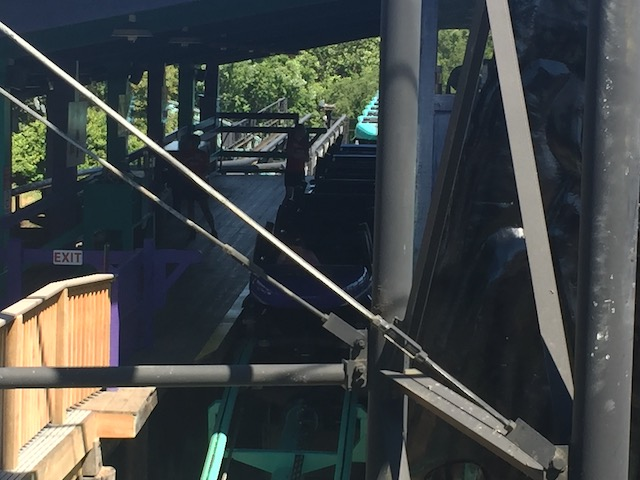

| |
East Coast Trip 2021
Lake Compounce Six Flags New England New York City American Dream Coney Island Six Flags Great Adventure
Casino Pier & Playland's Castaway Cove Dorney Park Cedar Point Kings Island Columbus Zoo & Waldameer Kennywood
Idlewild & Lakemont Park Hersheypark Knoebels
All right. So we're back at Kennywood. Now this is a park we've been to before. However, our last visit was 13 years ago! I was a teenager last time I was here. And since then, Kennywood has added multiple new coasters including a big one 2 years before our visit (2019). So yeah. We were LONG overdue for another Kennywood visit.
Hello Phantoms Revenge. It sure is good to see you again.
 Hmm. I don't remember this being there last time. It must be new.
Hmm. I don't remember this being there last time. It must be new.
It sure is good to be back here.
Love how you're greeted by a carousel horse when you enter the park.
Not sure how you survived this pandemic if you're allergic to hand santizer. Must suck to be that one unlucky person.
Why!? It's the middle of summer! Closing at 7 just seems....excessively early!
Honestly, after being underwhelmed by the options the Bites & Pints Festival offered us at Lake Compounce earlier in the trip, I'm not sad that we won't be here for the festival at Kennywood.
Great for locals who love the Pittsburgh Steelers. However, as someone who doesn't care about football, not interested in this.
Yeah. Time for the newest coaster, Steel Curtain.
 So yeah. Steel Curtain is a new S&S....looping coaster monstrosity. This'll be a fun ride.
So yeah. Steel Curtain is a new S&S....looping coaster monstrosity. This'll be a fun ride.
Go nuts at the theming football fans. Tacky, but.....who am I to complain? I get a giant coaster out of this.
Ugh. Yeah. This thing gets a line. And....the operations on this thing aren't the best.
 Enjoy your ride guys! =)
Enjoy your ride guys! =)
Unfortunately, I have some bad news. Steel Curtain isn't nearly as good as it looks.
 Now don't get me wrong. I'm not saying this to diss the ride. It's still a very fun ride and I did overall enjoy it. It's just....the thing looks so twisted and loopy and f*cked up, that you'd expect it to be this AMAZING ride given that it looks like a child's scribbling come to life. So when it's only very good, yeah. Kind of a let-down.
Now don't get me wrong. I'm not saying this to diss the ride. It's still a very fun ride and I did overall enjoy it. It's just....the thing looks so twisted and loopy and f*cked up, that you'd expect it to be this AMAZING ride given that it looks like a child's scribbling come to life. So when it's only very good, yeah. Kind of a let-down.
 The entire ride is essentially just inversions. Which are fun and all. But unfortunately, none of them really stand out (despite the fact that this ride contains MANY unique inversions) and bring any amazing forces.
The entire ride is essentially just inversions. Which are fun and all. But unfortunately, none of them really stand out (despite the fact that this ride contains MANY unique inversions) and bring any amazing forces.
 If you want my full thoughts on the ride, check out my new review of Steel Curtain (We also released new reviews of all the new for us coasters at Kennywood with this update).
If you want my full thoughts on the ride, check out my new review of Steel Curtain (We also released new reviews of all the new for us coasters at Kennywood with this update).
Hmm, out of all the new for 2019 coasters that I've ridden, this probably is the best despite my dissapointment in it. Yeah. This is better than both Copperhead Strike and West Coast Racers (If that even counts as a 2019 Coaster lol).
Honestly, the merchandise here might ACTUALLY be cheaper than if you tried buying it at a Sporting Stadium while at a game lol.
 Nope. Not today Bites 'N' Pints Festival.
Nope. Not today Bites 'N' Pints Festival.
Please tell me that you just forgot to take this sign down out of laziness and that you're not ACTUALLY offering a Rudolph the Red-Nosed Reindeer 4-D show in F*CKING JUNE!!!
 OK. Enough is enough. Time to get back on Phantoms Revenge.
OK. Enough is enough. Time to get back on Phantoms Revenge.
Steel Curtain and Sky Rocket may be new and fun, but Phantom's Revenge is still the star attraction of the park.
While this isn't as amazing as when I first rode it simply due to how many more amazing coasters I've ridden since my last visit, this still stands out as one of the best hyper coasters.
The first drop may not be the biggest drop, but it's still really good and has some nice laterals.
Oh, you think the ride is good now? Just wait a few more seconds. >=)
The trend of this trip featuring all of the best coasters in America continues.
But don't worry. The ride also has variety and other elements, such as strong laterals.
BAM!!! EJECTOR AIR!!!
No. They're not tearing down the giant frisbee. Not sure why the crane's there, but it's still running at Kennywood to this day.
Can I please stick my head in that fountain?
Snore. Can we do the Knoebels Bumper Cars already?
*gasp* ANOTHER new since my last visit coaster at Kennywood!? Gotta get on it!
 So I wasn't really sure what to expect of this ride. Luckily for me, this was really fun and exceeded my expectations.
So I wasn't really sure what to expect of this ride. Luckily for me, this was really fun and exceeded my expectations.
Get a nice pop of ejector air at the top of the top hat. Best airtime in the park excluding Phantom's Revenge and Jackrabbit.
 Apparently, this was the prototype of the standard Sky Rocket II model (Electric Eel, Tempesto, Superman, etc.). This is really surprising since....this ride is better. I get why other parks would want the II model since....takes up less space. But honestly, this ride is better than ALL the Sky Rocket II models. I did NOT expect to walk away with that opinion.
Apparently, this was the prototype of the standard Sky Rocket II model (Electric Eel, Tempesto, Superman, etc.). This is really surprising since....this ride is better. I get why other parks would want the II model since....takes up less space. But honestly, this ride is better than ALL the Sky Rocket II models. I did NOT expect to walk away with that opinion.
 Love that cutbacks are becoming more popular. And yeah. This gives the ride some nice laterals and is a lot of fun.
Love that cutbacks are becoming more popular. And yeah. This gives the ride some nice laterals and is a lot of fun.
 And of course, there's some nice whip in the corkscrew as well.
And of course, there's some nice whip in the corkscrew as well.
 Unfortunately, there's not much airtime there. But at least the ride is winding down at that point.
Unfortunately, there's not much airtime there. But at least the ride is winding down at that point.
Honestly, there's a part of me that almost considers this to be better than Steel Curtain. OK. Not quite. But it's A LOT closer in ranking to it than I expected it to be.
Still love the fact that they themed this ride to the Kennywood arrows.
 OK. We've had a lot of fun gushing over the steel coasters at the park. But the park is most well known for its classic woodies, and we need to give them some love too.
OK. We've had a lot of fun gushing over the steel coasters at the park. But the park is most well known for its classic woodies, and we need to give them some love too.
Happy Birthday to 100 years of Jackrabbit. Hope my cliff jumping ass can last that long *laughs nervously and cancels plans of eating fast food tonight*.
 Yeah. This ride TOTALLY deserves that National Historic Monument title.
Yeah. This ride TOTALLY deserves that National Historic Monument title.
Still love the old school minimalist trains this ride has.
 Yeah. This may not look like an amazing coaster. But there's one moment you're gonna wanna be prepared for.
Yeah. This may not look like an amazing coaster. But there's one moment you're gonna wanna be prepared for.
 For all the amazing coasters I've ridden with insane ejector air since my last visit, and there's A LOT of them. But despite that, this 101 year old coaster still has a moment ejector air strong enough to knock you off your feet and stand out. And I like that.
For all the amazing coasters I've ridden with insane ejector air since my last visit, and there's A LOT of them. But despite that, this 101 year old coaster still has a moment ejector air strong enough to knock you off your feet and stand out. And I like that.
Yeah. We have to have lunch here. The food here is too iconic.
 OK. This food is still really good. But....it just doesn't have the same punch it did last time. I've been to too many parks with great dining options to be wowed by the Potato Patch fries. And that's not even going over the great foods I've had at regular resteraunts.
OK. This food is still really good. But....it just doesn't have the same punch it did last time. I've been to too many parks with great dining options to be wowed by the Potato Patch fries. And that's not even going over the great foods I've had at regular resteraunts.
OK. This is still fun and all, but not nearly as crazy as the fun that happened last time. Damn it! I'm spoiled by all the amazing fun houses in Europe! This just can't compare!
At least Steve getting disoriented in here made it still a lot of fun. >=)
You lost Kennywood? Well no need to worry. Incrediblecoasters found it for you Pittsburgh. You're welcome. =)
Time for the one credit that existed on my last visit, but that I still needed (there technically is also a kiddy credit. But that requires a child to ride. So as far as I'm concerned, that ride doesn't exist).
Ugh. I just remembered why 16 year old me decided to skip this ride.

While this would've been EXTREMELY helpful for Exterminator, we did not take advantage of the fast pass. Have to be selective where we use them to keep the budget for these trips reasonable. Just used them at Cedar Point and one other upcoming park on this trip.
OK. The line for Exterminator isn't just horrendous due to capacity. The operations also play a huge role. Sorry to say this, but the operations at Kennywood as a whole have been dissapointing, which is already a real bummer. But the Exterminator operations in particular, are some of the WORST!!! The employees spending more time chatting and lollygagging than checking restraints and dispatching trains (as demonstrated in this picture)! And this is already a slow-moving line due to capacity! And the line is a hot humid place with no air-flow! So its extremely uncomfortable and humid in here! This is NOT acceptable! Scott & Steve, I know you know someone who's high up in Palace. PLEASE inform him of these Exterminator operations (To be fair, they did. I remember them texting him this photo)! Disciplinary action genuinely needs to be taken here! Shape up or get fired (Really wish I got one of those Six Flags Park Satisfaction Surveys. Would've LOVED to light into these operators there)! From a former ride operator.
 As for Exterminator itself, the bad news is that despite the theme sounding awesome in paper, it's just a Spinning Mouse in a box in practice. But the good news is that it spins fairly well, which is appreciated on these rides. Regardless, I WON'T be reriding this on the next visit unless it's on an empty day. I am NOT dealing with that line again. Teenage Kevin was clearly right in hindsight.
As for Exterminator itself, the bad news is that despite the theme sounding awesome in paper, it's just a Spinning Mouse in a box in practice. But the good news is that it spins fairly well, which is appreciated on these rides. Regardless, I WON'T be reriding this on the next visit unless it's on an empty day. I am NOT dealing with that line again. Teenage Kevin was clearly right in hindsight.
 *Sigh* Let's get back to the classics. Those are fun.
*Sigh* Let's get back to the classics. Those are fun.
Love how Kennywood preserves their history like that.
 This wasn't nearly as fun as it was last time. This ride significantly benefits when you split up and ride on opposite sides and have a REAL coaster race. Especially since you come within high-five distance. Ugh. Take note for next time guys!
This wasn't nearly as fun as it was last time. This ride significantly benefits when you split up and ride on opposite sides and have a REAL coaster race. Especially since you come within high-five distance. Ugh. Take note for next time guys!
Though to be fair, the coaster racing is....not synced up the best. I'm not talking about the operators need to work better to dispatch at the same time! I'm saying that one car just gets way too ahead. This coaster race becomes too lop-sided to really enjoy the coaster race!
 Saved the best classic woodie for last.
Saved the best classic woodie for last.
 Oh look. It's been a while. But I finally found another Gum Wall while in line for Thunderbolt. At least these things are more rare. Silver lining.
Oh look. It's been a while. But I finally found another Gum Wall while in line for Thunderbolt. At least these things are more rare. Silver lining.
This still has one of the strangest layouts out of any wooden coaster with some insanely BRUTAL laterals.
 BAM!!! SLAM!!! GOD DAMN!!!
BAM!!! SLAM!!! GOD DAMN!!!
 The upside of having the no single rider line when you have a group with an odd number of people? Getting to ride twice to function as the lateral buddy with the main group, and then going again so Evan had a partner for those crazy laterals! =)
The upside of having the no single rider line when you have a group with an odd number of people? Getting to ride twice to function as the lateral buddy with the main group, and then going again so Evan had a partner for those crazy laterals! =)
Another classic Kennywood ride that I didn't bother with last time because....this isn't a major roller coaster!
 Almost all of Kennywood is this Historic Center. And I love how the park is this nice blend of old school classic rides with crazy modern new rides, such as Steel Curtain.
Almost all of Kennywood is this Historic Center. And I love how the park is this nice blend of old school classic rides with crazy modern new rides, such as Steel Curtain.
 Sky Rocket from the Old Mill line (Wish I got more rides on that. Super fun ride).
Sky Rocket from the Old Mill line (Wish I got more rides on that. Super fun ride).
Oh wait. I remember why I skipped this last time. Thanks for not having this be the Garfield ride anymore. I really appreciate that.
Despite the fact that it's only 7:00 and still clearly light outside, Good Night Kennywood.
 OK. We still have a lot of time. Let's go out to dinner. I hear that this place is supposed to be a really popular place around Pittsburgh with the locals. So of course, we have to try it.
OK. We still have a lot of time. Let's go out to dinner. I hear that this place is supposed to be a really popular place around Pittsburgh with the locals. So of course, we have to try it.
Hey co-worker originally from Pittsburgh! You recognize this place? ;)
Now THIS is my style of drink (This is a Drunk Duck). Both for being a really good cocktail as well as the fact that it comes with a rubber duck swimming in it. TOTALLY my vibe. =)
And their Loaded Cheesesteak Bomb was pretty bitchin too (Notice my all finshed Drunk Duck in the background?). Two thumbs up and someplace I'd gladly return to when I'm back in Pittsburgh.
Uh....the air conditioner at our hotel came like that. We did NOTHING to make it like that. *whistles innocently* (Though seriously, it actually broken when we came into the room).
OK. I forget why exactly we did this (Damn Yahoo and busy adult life causing these updates being so damn late), but we all have Palace Season Passes. And.....I guess we're spending an extra bonus hour at Kennywood before we move onto the other parks for the day.
Hey. I have no problem getting more bonus rides on Phantom's Revenge.

Gee. I wonder if Kennywood is crowded today?
Honestly, the only real problem with Phantom's Revenge is that it's too damn short. Phenomenal ride.
Enjoy all the crazy ejector air that follows that amazing second drop guys.
I love how they recycle that Phantom's Revenge scrap metal and turn it into theming for this random kiddy ride.
Yeah. We gotta get ourselves another ride on this. And we're right here.
 I sure hope none of you fools have anything you don't want getting crushed in your pockets.
I sure hope none of you fools have anything you don't want getting crushed in your pockets.
 I may not be the biggest fan of this ride, but I gotta get another ride on this thing.
I may not be the biggest fan of this ride, but I gotta get another ride on this thing.
 Not only is this ride really fun, but it also manages to look not only insane (despite the way it rides), but it is also just a really beautiful twisted mess of track.
Not only is this ride really fun, but it also manages to look not only insane (despite the way it rides), but it is also just a really beautiful twisted mess of track.
 Love the inversion going directly underneath the airtime hill (BTW, the airtime is very weak on this ride. Just letting you know).
Love the inversion going directly underneath the airtime hill (BTW, the airtime is very weak on this ride. Just letting you know).
Idlewild & Lakemont Park
Home
|
{kind=link}